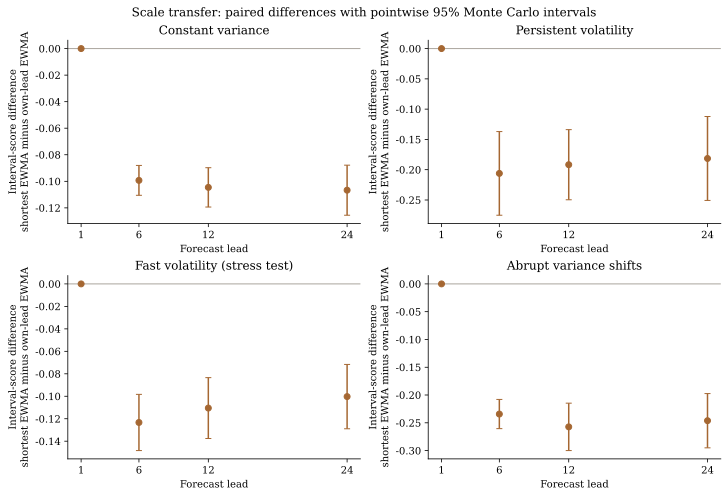
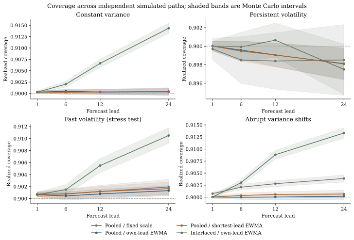
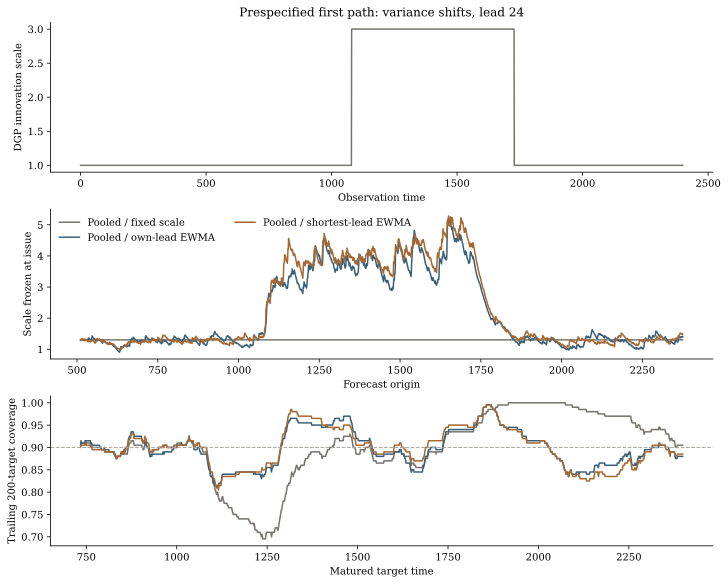

Python · v0.7.0
strategy-inference
时间序列的预测评估、统计比较与在线不确定性。模型通过 callable 接入；输出保留预测起点、物理步长与目标位置。
一条实际工作流
滚动或扩展窗回测 → 点／分位数损失与区间评分 → 固定候选的时间依赖比较 → 单步或多步在线区间。NumPy、SciPy 为核心依赖；pandas 和 Matplotlib 可选。
v0.7 新增明确的反馈时钟：先观察当期数据，处理目标已经成熟的预测，再发出下一条路径。尾部未成熟预测保留为 pending；已发出的边界、阈值和尺度不会回改。
python -m pip install https://github.com/Studyer-Tang/strategy-inference/releases/download/v0.7.0/strategy_inference-0.7.0-py3-none-any.whlimport numpy as np
from strategy_inference import backtest, naive_forecast, multistep_intervals
y = np.random.default_rng(17).normal(size=512).cumsum()
run = backtest(y, {"naive": naive_forecast}, initial_train_size=128, horizon=12)
origins = np.array([split.origin for split in run.splits])
leads = run.target_indices[0] - origins[0]
intervals = multistep_intervals(
y, run.forecasts[:, :, 0], origins=origins, lead_times=leads,
scale=np.sqrt(leads), step_size=.1 / np.sqrt(leads),
decay=.2, initial_quantile=.65,
scale_decay=.97, scale_source="shortest",
)
print(intervals.summary())这是已知创新方差为 1 的模拟 random walk，初始尺度为 √h。实际应用须从训练数据或模型给出尺度；提供给库的点预测也须避免未来信息。尚未发布到 PyPI。
共享信息，但保持目标清楚
每个步长维护一个阈值状态，也可以按起点相位分路更新。可选 EWMA 尺度只使用成熟残差：各步长独立估计，或用最短步长的成熟误差更新共同尺度，按事先指定的比例传到其他步长。连续发行且队列填满后，各步长在同一时点收到当前标签；共享尺度利用不同预测起点的残差信息，并不提前获得标签或消除长步长阈值的反馈延迟。
这里的保证是各步长已成熟预测的历史平均覆盖，在理想运算中有显式延迟与步长代价。它不是条件覆盖，也不是整条预测路径同时覆盖。普通浮点运算没有舍入认证；空集和无界区间完整保留。
基于 ICML 2024 的分位数跟踪，并对照 2026 AcMCP 修订预印本与 2026 年 9 月的延迟反馈预印本。短步尺度转移是本项目检验的实用扩展，未作首创性主张；完整 AcMCP、条件覆盖与序贯模型集合仍在路线图。
尺度转移在什么情形有用
四种预设过程，各 40 条独立路径，T=2400，步长 1、6、12、24。预测器使用已知条件均值以隔离校准问题；初始尺度仅估计于训练前缀。方法与参数在正式路径生成前固定，正式种子与工程试运行分开。
下表只展示 h=24 的评分差及逐点 95% Monte Carlo 区间。负值是短步共享尺度评分更低；含空集或无界区间的路径不会从比较中删除。区间不表示同时显著性，也不代表真实数据验证。
| 过程 | 短步尺度减独立尺度，差值 [区间] |
|---|---|
| 恒定方差 | -0.107 [-0.126, -0.088] |
| 持续波动 | -0.181 [-0.251, -0.112] |
| 快速波动 | -0.100 [-0.129, -0.072] |
| 方差突变 | -0.246 [-0.295, -0.197] |
共享方案在这四种设定中优于自身步长 EWMA；固定尺度或相位交织在部分情形的评分更低，局部覆盖也未同步改善。完整比较、开发选择与解释范围见结果说明。



本机工程计时
四个步长，串行进程，BLAS 线程环境设为 1；一次预热后五次热调用的中位数。耗时为毫秒，跟踪分配峰值为 KiB。输入生成、导入、独立一致性检查和调用后的指纹不计时；API 内部输出构造计时。
| 任务 | 耗时 / ms | 峰值 / KiB |
|---|---|---|
| 批量 pooled · 12,000 × 4 | 183.00 | 4866.76 |
| 流式 pooled · 50,000 × 4 | 666.79 | 19.16 |
| 流式 pooled · 1,000 × 4 | 13.53 | 18.91 |
| 流式 interlaced · 50,000 × 4 | 678.16 | 24.98 |
macOS-26.7.1-arm64-arm-64bit-Mach-O · Python 3.13.15 · NumPy 2.5.3。峰值包含新输出与临时分配，排除已有输入及导入，不是 RSS。流式状态与 pending 队列空间取决于步长集合，批量结果另需 O(FH)。本机计时不能作为通用性能或统计有效性承诺。
计时负载使用统一学习率 0.1；正式模拟使用 0.1/√h。两者分别用于工程成本与统计效果，详细设置见性能说明。